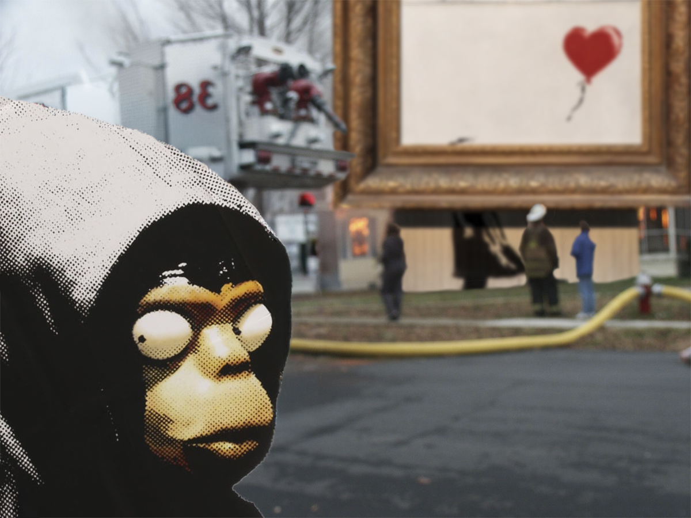

The original Disaster Girl could be the patron saint of pranksters and chaos agents, grinning in the face of destruction. Banksy’s Love Is in the Bin (2018) is the embodiment of that attitude, with the art having self-destructed immediately after being won at auction. In the mashup, a depiction of a masked Banksy (as used by him on a version of the poster for his film Exit Through the Gift Shop (2010)) replaces the girl and a monumental-sized Love Is in the Bin replaces the burning house. Banksy shares the moment with the viewer alone, implying the intentionality of the destruction. My mashup acknowledges the elements of mischief and destruction present in both pieces. Ultimately it brings these themes into a specific context within the Art world.
